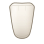
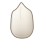
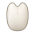
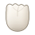
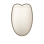
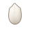
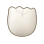
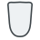
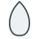
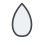

DentalClinic · UX-05L
Pendiente de aprobación visual · no integrado
Siluetas con volumen anatómico
Siete coronas en marfil con iluminación lateral, sombras suaves y detalles anatómicos. Compara la propuesta UX-05L con las versiones planas de UX-05K, también a 44 y 32 px. La geometría, el volumen y el detalle están separados. No incluyen estados clínicos y todavía no se utilizan en el odontograma.
4 permanentes
3 temporales
0 premolares temporales
viewBox 0 0 44 44
sin dependencias
01
Ampliadas
Cada silueta a 176 px. La rejilla marca celdas de 44 px: el tamaño real del objetivo en el odontograma.
Incisivo
Borde incisal ancho, cuerpo alargado y cuello estrecho.

Canino
Cúspide única desplazada y pendientes asimétricas.

Premolar
Dos cúspides con valle central y cuerpo más ancho.

Molar
Cuatro cúspides redondeadas, cuerpo robusto y surcos suaves.

Incisivo
Más corto, redondeado y bulboso, con cuello muy marcado.

Canino
Cúspide corta y roma, de cuerpo redondeado.

Molar
Muy bajo y redondeado, con cúpulas suaves y cuello estrecho.
02
Tamaño real de uso
Mismo recurso, sin retoques: 44 px (objetivo actual) y 32 px (prueba de legibilidad mínima).44 pxobjetivo actual
Incisivo
Canino
Premolar
Molar
Inc. temp.
Can. temp.
Mol. temp.
32 pxprueba mínima
Incisivo
Canino
Premolar
Molar
Inc. temp.
Can. temp.
Mol. temp.
03
Antes / después
Versiones originales conservadas en legacy/. En móvil, desplaza la tabla horizontalmente.| Pieza | 104 px · ampliado | 44 px · uso real | 32 px · prueba mínima | |||
|---|---|---|---|---|---|---|
| Antes | Después | Antes | Después | Antes | Después | |
| IncisivoPermanente |  |
|||||
| CaninoPermanente |  |
|||||
| PremolarPermanente | ||||||
| MolarPermanente | ||||||
| IncisivoTemporal | ||||||
| CaninoTemporal |  |
|||||
| MolarTemporal | ||||||
04
Comparación de familias
Mismo lienzo y escala para ambas denticiones; las temporales conservan sus proporciones propias.Dentición permanente
coronas más altas y definidasIncisivo
Borde incisal ancho; se estrecha hacia el cuello.
Canino
Una sola cúspide desplazada; pendientes asimétricas.
Premolar
Dos cúspides separadas por un valle.
Molar
Cuatro cúspides, masa ancha y surcos ramificados.
Dentición temporal
más cortas, redondeadas y de cuello estrechoIncisivo
Cuerpo corto y bulboso; borde redondeado.
Canino
Punta roma, sin la altura del permanente.
Molar
Perfil bajo y ovalado, con cúpulas suaves.
05
Simulación de espaciado
Piezas consecutivas en el orden FDI, con el paso previsto. Vista de referencia sin rotación de arcada.Arcada permanente · 16 piezas
16 × 44 px = 704 px · paso 44 px18
17
16
15
14
13
12
11
21
22
23
24
25
26
27
28
Superior derecho 18→11 · Superior izquierdo 21→28Objetivo 44×44 px, sin solapamiento
Arcada temporal · 10 piezas
10 × 56 px = 560 px · paso 56 px55
54
53
52
51
61
62
63
64
65
Superior derecho 55→51 · Superior izquierdo 61→65Sin premolares temporales
Estados clínicos, después
Los recursos no llevan color de condición ni marcas de patología. La integración aplicará relleno, contorno y glifos como capas, conservando la semántica actual.
Variables de color
--tooth-fill (marfil #f8f3ea), --tooth-outline
(#8a7f6e) y --tooth-groove (#8a7b66). La futura
incrustación inline permitirá modificar colores y ocultar las capas de luz y detalle.
Aislamiento
Galería estática: no usa backend, datos de pacientes ni el odontograma de producción.
Los siete archivos viven en src/assets/dental/.